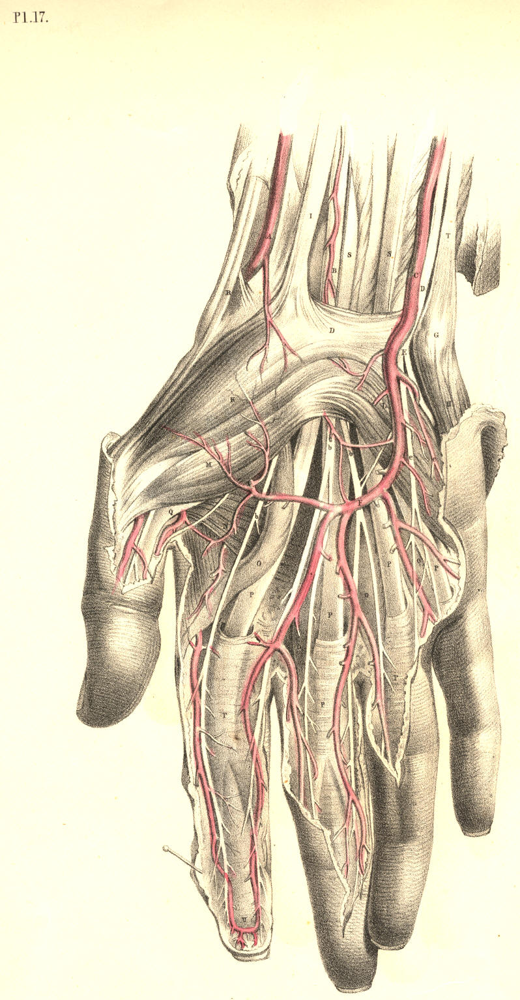
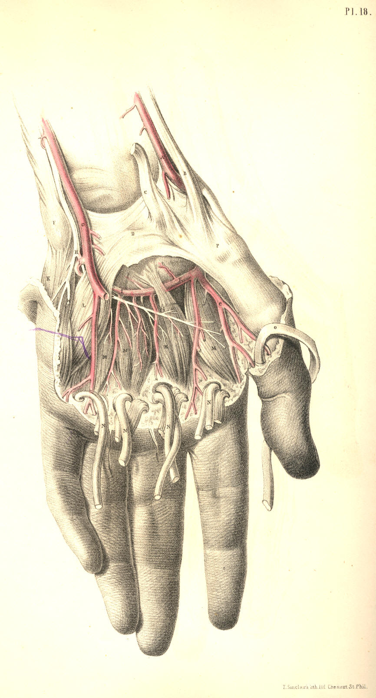
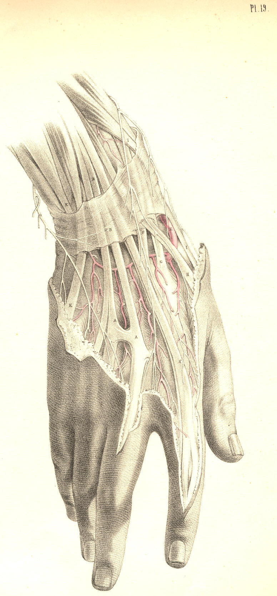

SURGICAL ANATOMY by JOSEPH MACLISE
COMMENTARY ON PLATES 17, 18, & 19.
THE SURGICAL DISSECTION OF THE WRIST AND HAND.
A member of such vast importance as the human hand necessarily claims a
high place in regard to surgery. The hand is typical of the mind. It is
the material symbol of the immaterial spirit, It is the prime agent of
the will; and it is that instrument by which the human intellect
manifests its presence in creation. The human hand has a language of its
own. While the tongue demonstrates the thought through the word, the
hand realizes and renders visible the thought through the work. This
organ, therefore, by whose fitness of form the mind declares its own
entity in nature, by the invention and creation of the thing, which is,
as it were, the mind's autograph, claims a high interest in surgical
anatomy; and accordingly the surgeon lays it down as a rule, strictly to
be observed, that when this beautiful and valuable member happens to be
seriously mutilated, in any of those various accidents to which it is
exposed, the prime consideration should be, not as to the fact of how
much of its quantity or parts it can be deprived in operation, but
rather as to how little of its quantity should it be deprived, since no
mechanical ingenuity can fashion an apparatus, capable of supplying the
loss of a finger, or even of one of its joints.
The main blood vessels and nerves of the arm traverse the front aspect
of the wrist, and are distributed chiefly to supply the palmar surface
of the hand, since in the palm are to be found a greater variety and
number of structures than are met with on the back of the hand. The
radial artery, A, Plate 17, occupies (as its name indicates) the radial
border of the forepart of the wrist, and the ulnar artery, C, Plate 17,
occupies the ulnar border; both vessels in this region of their course
lie parallel to each other; both are comparatively superficial, but of
the two, the radial artery is the more superficial and isolated, and
thereby occasions the radial pulse. The anatomical situation of the
radial artery accounts for the fact, why the pulsation of this vessel is
more easily felt than that of the ulnar artery.
The radial vessel, A, Plate 17, at the wrist, is not accompanied by the
radial nerve; for this nerve, C, Plate 19, passes from the side of the
artery, at a position, C, Plate 19, varying from one to two or more
inches above the wrist, to gain the dorsal aspect of the hand. The ulnar
artery, C, Plate 17, is attended by the ulnar nerve, D, in the wrist,
and both these pass in company to the palm. The ulnar nerve, D E, lies
on the ulnar border of the artery, and both are in general to be found
ranging along the radial side of the tendon of the flexor carpi ulnaris
muscle, T, and the pisiform bone, G. The situation of the radial artery
is midway between the flexor carpi radialis tendon, I, and the outer
border of the radius. The deep veins, called comites, lie in close
connexion with the radial and ulnar arteries. When it is required to lay
bare the radial or ulnar artery, at the wrist, it will be sufficient for
that object to make a simple longitudinal incision (an inch or two in
length) over the course of the vessel A or C, Plate 17, through the
integument, and this incision will expose the fascia, which forms a
common investment for all the structures at this region. When this
fascia has been cautiously slit open on the director, the vessels will
come into view. The ulnar artery, however, lies somewhat concealed
between the adjacent muscles, and in order to bring this vessel fully
into view, it will be necessary to draw aside the tendon of the flexor
ulnaris muscle, T.
The radial artery, A, Plate 18, passes external to the radial border of
the wrist, beneath the extensor tendons, B, of the thumb; and after
winding round the head of the metacarpal bone of the thumb, as seen at
E, Plate 19, forms the deep palmar arch E, Plate 18. This deep palmar
arch lies close upon the forepart of the carpo-metacarpal joints; it
sends off branches to supply the deeply situated muscles, and other
structures of the palm; and from it are also derived other branches,
which pierce the interosseal spaces, and appear on the back of the hand,
Plate 19. The deep palmar arch, E, Plate 18, inosculates with a branch
of the ulnar artery, I, Plate 18, whilst its dorsal interosseal
branches, Plate 19, communicate freely with the dorsal carpal arch,
which is formed by a branch of the radial artery E, Plate 19, and the
terminal branch of the posterior interosseous vessel.
The ulnar artery, C, Plate 17, holds a direct and superficial course,
from the ulnar border of the forearm through the wrist; and still
remains superficial in the palm, where it forms the superficial palmar
arch, F. From this arch arise three or four branches of considerable
size, which are destined to supply the fingers. A little above the
interdigital clefts, each of these digital arteries divides into two
branches, which pass along the adjacent sides of two fingers--a mode of
distribution which also characterises the digital branches of the
median, b b, and ulnar
nerves, e e. The superficial
palmar arch of the
ulnar vessel anastomoses with the deep arch of the radial vessel. The
principal points of communication are, first, by the branch, (ramus
profundus,) I, Plate 18, which passes between the muscles of the little
finger to join the deep arch beneath the long flexor tendons. 2nd, by
the branch (superficialis volae) which springs from the radial artery,
A, Plate 17, and crosses the muscles of the ball of the thumb, to join
the terminal branch of the superficial arch, F, Plate 17. 3rd, by
another terminal branch of the superficial arch, which joins the
arteries of the thumb, derived from the radial vessel, as seen at e,
Plate 18.
The frequent anastomosis thus seen to take place between the branches of
the radial, the ulnar, and the interosseous arteries in the hand, should
be carefully borne in mind by the surgeon. The continuity of the three
vessels by anastomosis, renders it very difficult to arrest a
haemorrhage occasioned by a wound of either of them. It will be at once
seen, that when a haemorrhage takes place from any of these larger
vessels of the hand, the bleeding will not be commanded by the
application of a ligature to either the radial, the ulnar, or the
interosseous arteries in the forearm; and for this plain reason, viz.,
that though in the arm these arteries are separate, in the hand their
communication renders them as one.
If a haemorrhage therefore take place from either of the palmar vessels,
it will not be sufficient to place a ligature around the radial or the
ulnar artery singly, for if F, Plate 17, bleeds, and in order to arrest
that bleeding we tie the vessel C, Plate 17, still the vessel F will
continue to bleed, in consequence of its communication with the vessel
E, Plate 18, by the branch 1, Plate 18, and other branches above
mentioned. If E, Plate 18, bleeds, a ligature applied to the vessel A,
Plate 18, will not stop the flow of blood, because of the fact that E
anastomoses with G, by the branch I and other branches, as seen in
Plates 17 and 19.
Any considerable haemorrhage, therefore, which may be caused by a wound
of the superficial or deep palmar arches, or their branches, and which
we are unable to arrest by compression, applied directly to the patent
orifices of the vessel, will in general require that a ligature be
applied to both the radial and ulnar arteries at the wrist; and it
occasionally happens that even this proceeding will not stop the flow of
blood, for the interosseous arteries, which also communicate with the
vessels of the hand, may still maintain the current of circulation
through them. These interosseous arteries being branches of the ulnar
artery, and being given off from the vessel at the bend of the elbow, if
the bleeding be still kept up from the vessel wounded in the hand, after
the ligature of the ulnar and radial arteries is accomplished, are in
all probability the channels of communication, and in this case the
brachial artery must be tied. A consideration of the above mentioned
facts, proper to the normal distribution of the vessels of the upper
extremity, will explain to the practitioner the cause of the difficulty
which occasionally presents itself, as to the arrest of haemorrhage from
the vessels of the hand. In addition to these facts he will do well to
remember some other arrangements of these vessels, which are liable to
occur; and upon these I shall offer a few observations.
While I view the normal disposition of the arteries of the arm as a
whole, (and this view of the whole great fact is no doubt necessary, if
we would take within the span and compass of the reason, all the lesser
facts of which the whole is inclusive,) I find that as one main vessel
(the brachial) divides into three lesser branches, (the ulnar, radial
and interosseous,) so, therefore, when either of these three supplies
the haemorrhage, and any difficulty arises preventing our having access
at once to the open orifices of the wounded vessel, we can command the
flow of blood by applying a ligature to the main trunk--the brachial. If
this measure fail to command the bleeding, then we may conclude that the
wounded vessel (whichever it happen to be, whether the radial, the
ulnar, or the interosseous) arises from the brachial artery, higher up
in the arm than that place whereat we applied the ligature. To this
variety as to the place of origin, the ulnar, radial, and interosseous
arteries are individually liable.
Again, as the single brachial artery divides into the three arteries of
the forearm, and as these latter again unite into what may (practically
speaking) be termed a single vessel in the hand, in consequence of their
anastomosis, so it is obvious that in order to command a bleeding from
any of the palmar arteries, we should apply a ligature upon each of the
vessels of the forearm, or upon the single main vessel in the arm. When
the former proceeding fails, we have recourse to the latter, and when
this latter fails (for fail it will, sometimes,) we then reasonably
arrive at the conclusion that some one of the three vessels of the
forearm, springs higher up than the place of the ligature on the main
brachial vessel.
But however varied as to the normal locality of their origin, at the
bend of the elbow, these vessels of the forearm may at times manifest
themselves, still one point is quite fixed and certain, viz., that they
communicate with each other in the hand. Hence, therefore, it becomes
evident, that in order to command, at once and effectually, a bleeding,
either from the palmar arteries, or those of the forearm, we attain to a
more sure and successful result, the nearer we approach the
fountain-head and place a ligature on it--the brachial artery. It is
true that to stop the circulation through the main vessel of the limb,
is always attended with danger, and that such a proceeding is never to
be adopted but as the lesser one of two great hazards. It is also true
that to tie the main brachial artery for a haemorrhage of anyone of its
terminal branches, may be doing too much, while a milder course may
serve; or else that even our tying the brachial may not suffice, owing
to a high distribution of the vessels of the arm, in the axilla, above
the place of the ligature. Thus doubt as to the safest measure, viz.,
that which is sufficient and no more, enveils the proper place whereat
to apply a ligature on the principal vessel; but whatever be the doubt
as to this particular, there can be none attending the following rule of
conduct, viz., that in all cases of haemorrhage, caused by wounds of the
vessels of the upper limb, we should, if at all practicable, endeavour
to stop the flow of blood from the divided vessels in the wound itself,
by ligature or otherwise; and both ends of the divided vessel require to
be tied. Whenever this may be done, we need not trouble ourselves
concerning the anomaly in vascular distribution.
The superficial palmar arch, F, Plate 17, lies beneath the dense palmar
fascia; and whenever matter happens to be pent up by this fascia, and it
is necessary that an opening be made for its exit, the incision should
be conducted at a distance from the locality of the vessel. When matter
forms beneath the palmar fascia, it is liable, owing to the unyielding
nature of this fibrous structure, to burrow upwards into the forearm,
beneath the annular ligament D, Plates 17 and 18. All deep incisions
made in the median line of the forepart of the wrist are liable to wound
the median nerve B, Plate 17. When the thumb, together with its
metacarpal bone, is being amputated, the radial artery E, Plate 19,
which winds round near the head of that bone, may be wounded. It is
possible, by careful dissection, to perform this operation without
dividing the radial vessel.
DESCRIPTION OF PLATES 17, 18, & 19.
PLATE 17.
A. Radial artery.
B. Median nerve; b b b b, its
branches to the thumb and fingers.
C. Ulnar artery, forming F, the superficial palmar arch.
D. Ulnar nerve; E e e, its
continuation branching to the little and ring
fingers, &c.
G. Pisiform bone.
H. Abductor muscle of the little finger.
I. Tendon of flexor carpi radialis muscle.
K. Opponens pollicis muscle.
L. Flexor brevis muscle of the little finger.
M. Flexor brevis pollicis muscle.
N. Abductor pollicis muscle.
OOOO. Lumbricales muscles.
P P P P. Tendons of the flexor digitorum sublimis muscle.
Q. Tendon of the flexor longus pollicis muscle.
R. Tendon of extensor metacarpi pollicis.
S. Tendons of extensor digitorum sublimis; P P P, their digital
prolongations.
T. Tendon of flexor carpi ulnaris.
U. Union of the digital arteries at the tip of the finger.

Plate 17
PLATE 18.
A. Radial artery.
B. Tendons of the extensors of the thumb.
C. Tendon of extensor carpi radialis.
D. Annular ligament.
E. Deep palmar arch, formed by radial artery giving off e, the artery of
the thumb.
F. Pisiform bone.
G. Ulnar artery, giving off the branch I to join the deep palmar arch E
of the radial artery.
H. Ulnar nerve; h,
superficial branches given to the fingers. Its deep
palmar branch is seen lying on the interosseous muscles, M
M.
K. Abductor minimi digiti.
L. Flexor brevis minimi digiti.
M. Palmar interosseal muscles.
N. Tendons of flexor digitorum sublimis and profundus, and the
lumbricales muscles cut and turned down.
O. Tendon of flexor pollicis longus.
P. Carpal end of the metacarpal bone of the thumb.

Plate 18
PLATE 19.
AAA. Tendons of extensor digitorum communis; A*, tendon overlying that
of the indicator muscle.
B. Dorsal part of the annular ligament.
C. End of the radial nerve distributed over the back of the hand, to two
of the fingers and the thumb.
D. Dorsal branch of the ulnar nerve supplying the back of the hand and
the three outer fingers.
E. Radial artery turning round the carpal end of the metacarpal bone of
the thumb.
F. Tendon of extensor carpi radialis brevis.
G. Tendon of extensor carpi radialis longus.
H. Tendon of third extensor of the thumb.
I. Tendon of second extensor of the thumb.
K. Tendon of extensor minimi digiti joining a tendon of extensor
communis.

Plate 19
COMMENTARY ON PLATES 20 & 21